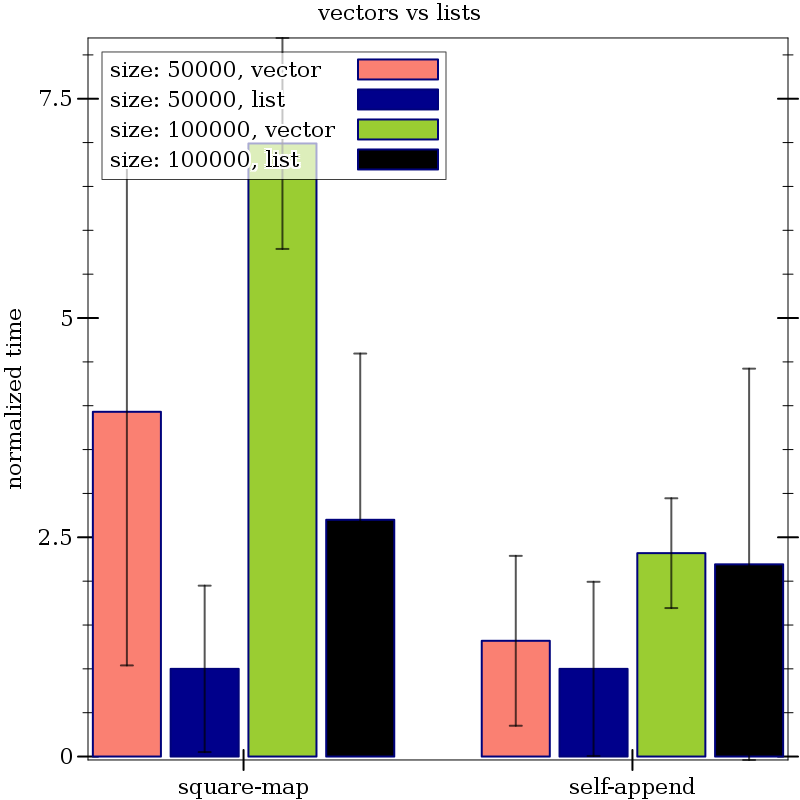

Benchmark
| (require benchmark) | package: racket-benchmark |
The goal of the benchmark library is to reduce the effort of writing benchmark harnesses. Specifically, this library aims to handle the sampling and plot rendering of results using sound statistical methods. This library is designed for comparing: different versions of Racket for a fixed set of programs, different versions of programs with the same version of Racket, or both (different versions of Racket and different versions of the programs). But as the examples in the first two sections will show, it is not limited to these use cases.
1 Example: Measuring the Impact of Racket’s JIT
In the following example we evaluate the use of Racket’s JIT on two simple programs, running each with and without JIT, and then plot the results. The plot renderer groups together the results of running the same program under different options, distinguishing the different options using colors.
> (require benchmark plot racket racket/runtime-path)
> (define-runtime-path fib-path "examples/macro-examples/fib.rkt")
> (define-runtime-path collatz-path "examples/macro-examples/collatz.rkt")
> (define-runtime-path compiled-dir "examples/macro-examples/compiled")
> (define results (run-benchmarks ; files to run (whats) (list fib-path collatz-path) ; list of options (hows) (list (list 'jit 'no-jit)) ; how to run each benchmark (lambda (file jit) (if (equal? jit 'jit) (system* (find-executable-path "racket") file) (system* (find-executable-path "racket") "-j" file))) #:build (lambda (file jit) (system* (find-executable-path "raco") "make" file)) #:clean (lambda (file jit) (system* (find-executable-path "rm") "-r" "-f" compiled-dir)) #:num-trials 30 #:make-name (lambda (path) (let-values ([(1 file-name 2) (split-path path)]) (path->string file-name)))))
> (parameterize ([plot-x-ticks no-ticks]) (plot-pict #:title "jit vs no jit" #:x-label #f #:y-label "normalized time" (render-benchmark-alts ; default options (list 'jit) results))) 
"fib.rkt"
#lang racket (define (fib n) (if (<= n 1) n (+ (fib (- n 1)) (fib (- n 2))))) (time (fib 26))
"collatz.rkt"
#lang racket (define (collatz n) (if (even? n) (/ n 2) (+ (* 3 n) 1))) (define (collatz-range m) (for-each (lambda (n) (collatz n)) (stream->list (in-range 0 m)))) (time (collatz-range 10000))
It’s important to note that both examples explicitly call time. This is because, by default, the time of a benchmark is not the time to evaluate (run ...), but rather the time reported to stdout by (run ...). Had we merely wanted to time how long it took to evaluate (run ...) we would have called run-benchmarks with #:extract-time 'delta-time. Such an example will be given in the next section.
2 Example: Vectors vs Lists
Here we use 'delta-time to demonstrate measuring the time to evaluate (run ...). At a high level we will be evaluating lists vs vectors for map and append. Specifically, map and append (or the appropriate variant) will correspond to our whats, and the list/vector size and whether we are doing list or vector operations will corespond to our hows. That is, for each input size, for each of list and vector, we will evaluate map and append.
> (require benchmark plot racket/match racket/vector racket/list)
; list/vector sizes > (define sizes (list 50000 100000))
> (define lists (map (lambda (i) (range i)) sizes))
> (define vectors (map list->vector lists))
> (define results (run-benchmarks ; operations (whats) (list 'square-map 'self-append) ; list of options (hows) (list ; sizes (and their indices) in the sizes list (map cons (range (length sizes)) sizes) ; implementations of operations (list 'vector 'list)) ; to run each benchmark (lambda (op index/size impl) (let ([fn (match (cons op impl) [(cons 'square-map 'vector) (lambda (i) (vector-map (lambda (x) (* x x)) i))] [(cons 'square-map 'list) (lambda (i) (map (lambda (x) (* x x)) i))] [(cons 'self-append 'vector) (lambda (i) (vector-append i i))] [(cons 'self-append 'list) (lambda (i) (append i i))])] [input (list-ref (match impl ['vector vectors] ['list lists]) (car index/size))]) (fn input))) ; don't extract time, instead time (run ...) #:extract-time 'delta-time #:num-trials 30))
> (parameterize ([plot-x-ticks no-ticks]) (plot-pict #:title "vectors vs lists" #:x-label #f #:y-label "normalized time" (render-benchmark-alts ; default options (list (cons 0 50000) 'list) results ; format options so we can omit the index in the size list #:format-opts (lambda (opts) (let ([index/size (car opts)] [impl (cadr opts)]) (format "size: ~a, ~a" (cdr index/size) impl))))))

3 Running Benchmarks
procedure
(run-benchmarks whats hows run [ #:build build #:clean clean #:extract-time extract-time #:num-trials num-trials #:make-name make-name #:skip skip] #:results-file results-file) → (listof benchmark-result?) whats : (listof any/c) hows : (listof (listof any/c)) run : procedure? build : (or/c procedure? #f) = #f clean : (or/c procedure? #f) = #f
extract-time : (or/c 'delta-time (-> string real?)) = racket-time-extract-result num-trials : exact-integer? = 30 make-name : (-> any/c any/c) = identity skip : procedure? = (lambda _ #f) results-file : #f
build and clean are functions with the same argument types as run and are run before and after each num-trials runs of run.
When not 'delta-time, extract-time is applied to the contents of stdout after each run of run, and must produce a benchmark-trial-time?. In this case it is expected that each of the whats report their time via stdout when run. When 'delta-time, the time of the benchmark is the time to evaluate (run args ...).
make-name takes an element of whats and produces a human-readable representation of the benchmark’s name.
skip has the same argument types as run, and when it evaluates to true the associated benchmark/options combination is skipped.
If results-file is non-false, results will be automatically persisted to results-file-<n>. Incremental results are recorded after all runs with a given set of options are finished. For more information about persisting results, see Persisting Results.
Benchmarks are logically specified as an (n+1)-dimensional matrix where n of the dimensions are options (how to run) and one dimension is the names/files (what to run). The names/files dimension is specified in the whats list. The options dimensions are specified as lists in the hows list.
In Example: Measuring the Impact of Racket’s JIT, (list "fib.rkt" "collatz.rkt") is the whats and (list (list 'jit 'no-jit)) is the hows. That is, there is only one dimension of options for running (list 'jit 'no-jit), and two things to run "fib.rkt" and "collatz.rkt".
building (fib.rkt jit) |
running (fib.rkt jit) ... (30 times) |
cleaning (fib.rkt jit) |
building (fib.rkt no-jit) |
running (fib.rkt no-jit) ... (30 times) |
cleaning (fib.rkt no-jit) |
building (collatz.rkt jit) |
running (collatz.rkt jit) ... (30 times) |
cleaning (collatz.rkt jit) |
building (collatz.rkt no-jit) |
running (collatz.rkt no-jit) ... (30 times) |
cleaning (collatz.rkt no-jit) |
3.1 Extracting Reported Time
procedure
(racket-time-extract-result str) → real?
str : string?
3.2 Progress Logging
To track progress of a benchmarking run, run-benchmarks logs actions (building, running, cleaning) it takes on a logged named 'benchmark at logging level 'info.
For more information about logging, see Logging.
4 Plotting
benchmark exports a renderer2d? for plotting results of benchmarks using the plot library.
procedure
(render-benchmark-alts norm-opts benchmark-results [ #:format-opts format-opts]) → renderer2d? norm-opts : (listof any/c) benchmark-results : (listof benchmark-result?)
format-opts : (-> (listof any/c) string?) = (lambda (opts) (apply ~s opts #:separator " "))
norm-opts is the list of options (from hows) of run that are the standard options.
For example, (list 'jit) is the list of standard options in Example: Measuring the Impact of Racket’s JIT.
benchmark-results are the results produced by run-benchmarks.
format-opts formats the list of options into strings for displaying on the legend of the plot.
parameter
(benchmark-show-legend? show-legend?) → void? show-legend? : any/c
= #t
4.1 Color Schemes
Color schemes are used to make benchmark plots more readable by coloring benchmarks according to the options (hows). In Example: Measuring the Impact of Racket’s JIT the ’jit’ option is salmon and the ’no-jit’ option blue.
parameter
→ (cons/c (listof plot-color/c) (listof plot-brush-style/c)) (current-benchmark-color-scheme benchmark-color-scheme) → void? benchmark-color-scheme : (cons/c (listof plot-color/c) (listof plot-brush-style/c))
value
: (cons/c (listof plot-color/c) (listof plot-brush-style/c))
value
: (cons/c (listof plot-color/c) (listof plot-brush-style/c))
value
: (cons/c (listof plot-color/c) (listof plot-brush-style/c))
value
: (cons/c (listof plot-color/c) (listof plot-brush-style/c))
value
: (cons/c (listof plot-color/c) (listof plot-brush-style/c))
value
: (cons/c (listof plot-color/c) (listof plot-brush-style/c))
5 Persisting Results
Results can be persisted with record-results and retrieved with get-past-results. Results can also be automatically persisted by run-benchmarks when passed a #:results-file argument.
procedure
(record-results results file) → void?
results : (listof benchmark-result?) file : path?
procedure
(get-past-results file [version]) → (listof benchmark-result?)
file : path? version : (or/c exact-integer? #f) = #f